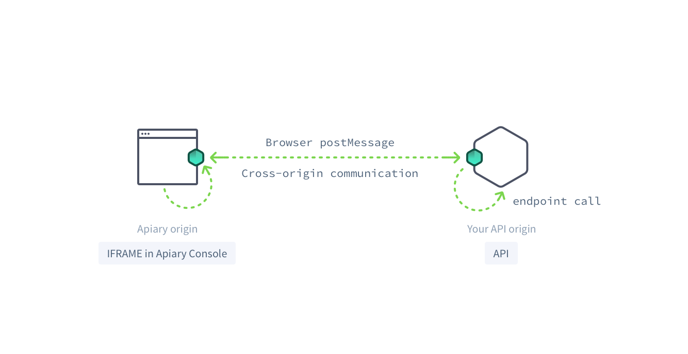

Browser Console with JS Agent
What is it?
Browser Console with JS Agent is an alternative and easier approach based on the Apiary’s Browser Console (thus it’s still using the browser’s JS XMLHttpRequest to talk with your server), but it does not suffer of all the CORS limitations.

How to install it
In order to enable your API to be used in conjunction with the Browser Console with JS Agent, make sure your API Documentation has been enabled. You can ask for enablement contacting our support.
Create an API endpoint that responds to /apiary/agent.html endpoint, and serve the following HTML page:
<!DOCTYPE html>
<html lang="en">
<head>
<meta charset="utf-8">
<title>Apiary Proxy</title>
<script src="https://api.apiary.io/seeds/agent.js"></script>
<script>
window.Apiary.createAgent({
subdomains: ['yourApi']
});
</script>
</head>
<body>
</body>
</html>
Apiary will try to reach the defined url starting from the host specified in the API Description Document
createAgent function
The createAgent(parameters) function has the following properties:
subdomains: An array of Apiary Documentations’ subdomain you would like to enable
You can find your API Name following this procedure
destroyAgent function
Normally once an agent is live it shouldn’t be necessary to destroy it as the communication is meant to be permanent.
However, if for some reason you want to close the current communication, you can use the destroyAgent method.
window.Apiary.destroyAgent();
Multiple APIs
In case you want to enable multiple API documentations, you just have to supply more items in the subdomain array.
<!DOCTYPE html>
<html lang="en">
<head>
<meta charset="utf-8">
<title>Apiary Proxy</title>
<script src="https://api.apiary.io/seeds/agent.js"></script>
<script>
window.Apiary.createAgent({
subdomains: [
'yourFirstApi'
'yourSecondApi'
]
});
</script>
</head>
<body>
</body>
</html>
Embed API
All the subdomain listed in the createAgent method are automatically enabled to be used from Embed as well.
How it works
- Your API serves the HTML with Js Agent throught the
/apiary/agent.htmlendpoint. - Apiary Console will load the HTML in an iframe in the browser in the origin of the Console
- The cross-origin communication between the Console and JS Agent is performed via the browser’s postMessage interface
- The JS agent performs the HTTP request using the browser’s XHR within the same origin and sends the response back to the Console